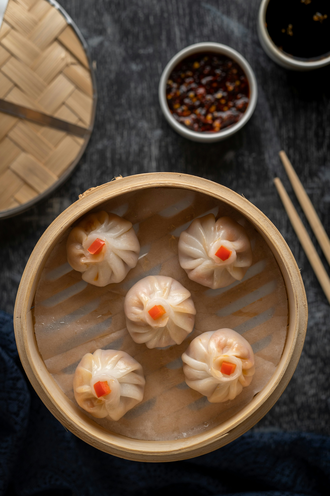

Steamed Dumplings

Description
A south Asian staple consisting of steamed dumpling wrappers filled with delicious savory ground pork mixture.
Ingredients
- 12 pieces homemade or store bought dumplings
- 2 tbsp soy sauce
- 2 tbsp water or broth for dumplings
- 1 tbsp doubanjiang
- 1/2 tbsp chili oil or chili garlic sauce
- 2-3 tsp sugar
- 2 tbsp Chinese black vinegar
- 2 tbsp Seasame oil
- 1/2 tsp Sesame seeds
- 1 tsp minced garlic
- Chopped fresh scallions
Method
- Mix sauce ingredients together adjusting for desired salt and spice level
- Steam the dumplings over a pot in a bamboo steamer lined with parchement paper.
- Drain dumplings and let dry on a paper towel, and serve with dipping sauce garnished with scallions.